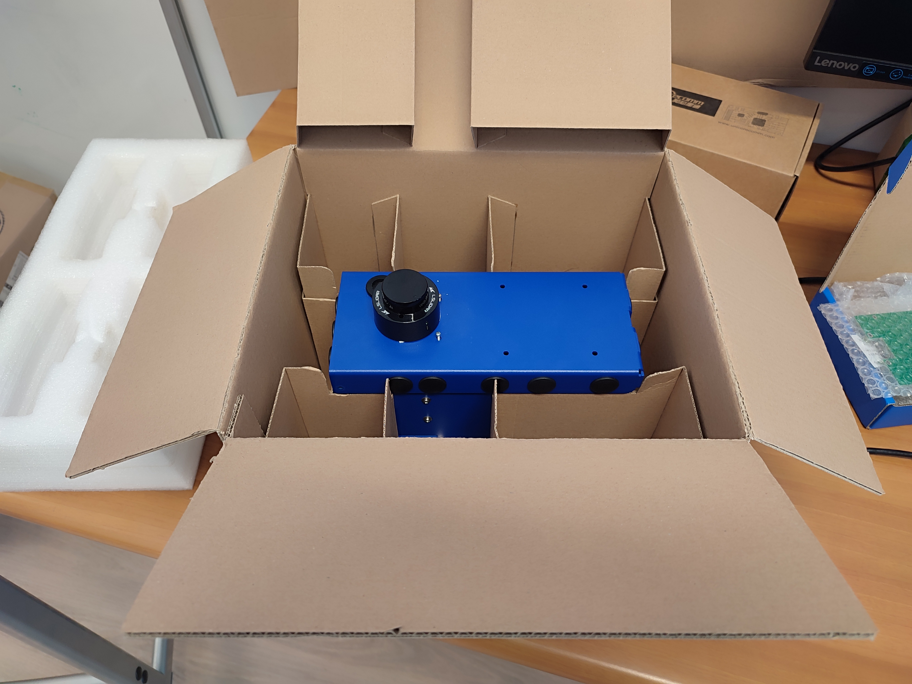
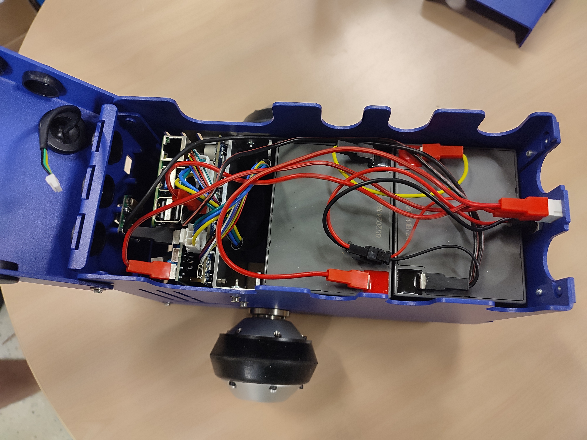
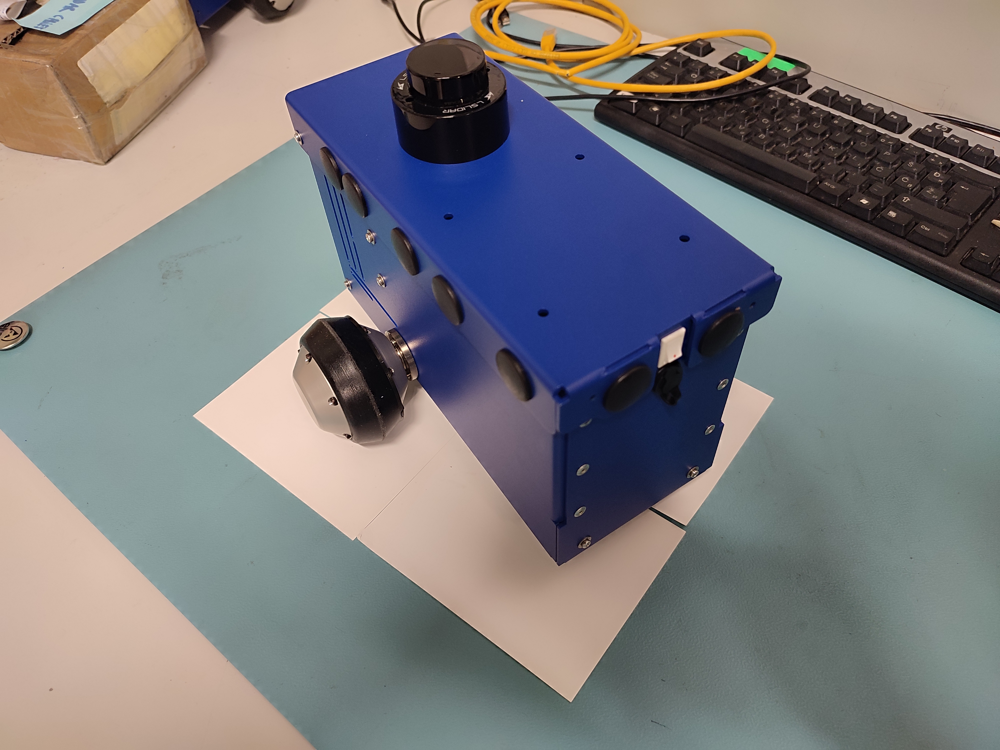
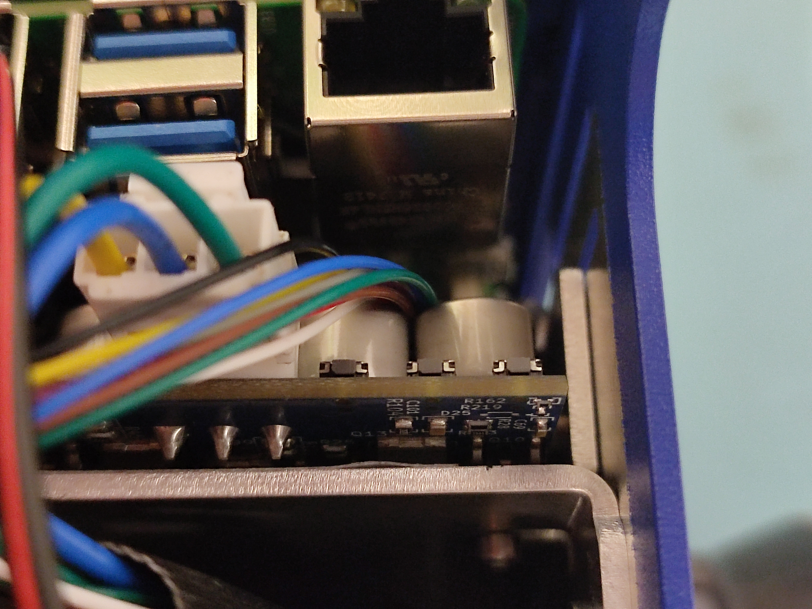

Getting Started with Magni 6 Mini
This guide cover unboxing and setting up your Magni 6 Mini robot. For general requirements and connectivity, see What you need to get started and Connecting.
Unboxing
- The Magni 6 Mini package includes the following:
1x Magni 6 Mini Robot (pre-assembled)
1x Battery Charger (see: Battery Guide for Magni 6 Robots on how to charge.)
{kind=link}

- Initial Inspection Checklist:
Verify all components are included and undamaged. [TODO: We will add here images of all the components so users can check.]
Check for loose connectors or wheels.
Ensure the Lidar on top of the cover is undamaged.
[ TODO: We will add video to show the checking process. ]
[images here of the componenets]
Setup
Battery Installation and Safety
Ensure the Magni 6 Mini’s two Lead-Acid batteries are safely installed and charged before powering on.
- Inspect the Batteries:
Check for visible damage (e.g., swelling, leaks, or cracks).
- Secure the Battery:
Connect the batteries to the Motor Controller Board (MCB), the switch, and to each other using the provided connectors.
Ensure the connection is firm to avoid power issues.
{kind=link}

- Charge the Battery:
Use a multimeter to check the batteires voltage. Keep the batteries always charged.
Once the batteries are inside the robot use the provided charger to charge them.
Warning
Do not use a damaged battery, as it may pose a safety hazard.
Charge in a well-ventilated area away from flammable materials.
Powering up the Robot
Locate the white power switch on the back of the Magni 6 Mini and turn it on.
{kind=link}

Confirm the Raspberry Pi’s green LED is illuminated. This indicates the robot is powered on.
The robot is now powered on and ready for connection.
Connecting to the robot
See Connecting for general connectivity guides. The Magni 6 Mini emits its own Wi-Fi for SSH access, or you can connect via home network.
Option 1: Connect via Robot’s Wi-Fi
Open a terminal.
SSH into the robot:
ssh ubuntu@10.42.0.1
You will be prompted a password, the password is: ubuntu
[Image here]
Option 2: Connect via Home Network
Connect to the robot to your local network:
sudo nmcli device wifi connect <AP name> password <password>
Example:
sudo nmcli device wifi connect myhotspot password mypass1234
Open a new terminal (the first will be frozen).
Identify the robot’s IP address on the network (hostname: ubuntu).
SSH into the robot:
ssh ubuntu@[robots IP]
You are now connected to the robot with Internet access.
Test Driving the robot
To drive the robot you must fulfill the following requirements:
Ensure the robot is powered on.
Open three terminal sessions connected to the robot (via SSH)
Activate the MCB by pressing the button closest to the wires.
{kind=link}

Warning
Place the robot on the ground before driving to prevent it from falling off a table.
In each terminal, run the following commands (one per terminal):
zenoh
zenoh bridge
teleop
Focus on the third terminal and follow the teleop instructions to drive the robot.